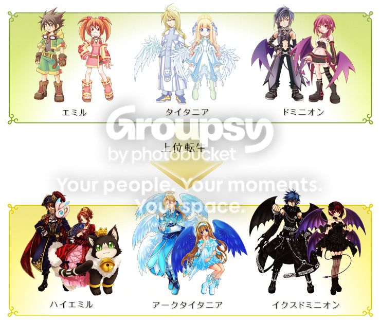

ข้อมูลทั่วไปเกี่ยวกับ "การจุติ"และ"คลาส3 Chronicle job"
เกี่ยวกับ การจุติ และ คลาส3 Chronicle job
คลาส3โครนิเคิลจ๊อบ คือ อาชีพได้ได้รับมาพร้อมกับการจุติเป็น เผ่าขั้นสูงแล้ว
โดยทั้ง 3 เผ่าพันธ์เมื่อการจุติเผ่าขั้นสูงแล้วจะได้รับพลังที่มากขึ้น แต่จะต้องผ่านการทดสอบบางอย่างก่อนจึงจะได้รับพลังนั้น

การจุติคืออะไร?
คือ การที่ทั้ง 3 เผ่าพันธ์ ได้แก่ Emil Titania และ Dominion ได้ผ่านเงื่อนไขของการจุติแล้ว
จะสามารถเข้าไปรับอีเวนท์ที่เมื่องเหนือเพื่อเข้ารับการทดสอบได้ เมื่อผ่านการทดสอบแล้วจะสามารถจุติเป็นเผ่าขั้นสูงได้
เมื่อจุติแล้ว Lv. จะกลับมาเป็น 1 และได้รับคลาส 3 Chronicle job
และสามารถสวมใส่อุปกรณ์ที่มี Lv. สูงกว่าตนเอง 10 เลเวลได้
สกิลของคลาส 2 สาย Expert Jobs และ Technical Jobs
สามารถใช้ได้ทั้งหมดพร้อมกันเท่าที่เราเก็บถึง job นั้นๆก่อนจุติ
ไม่ได้จำกัดจำนวนสกิล 1-5 สกิลเหมือนการ Switch Job
เช่น ก่อนจุติมี Expert Job50 และ Technical Job35 หลังจุติแล้วสามารถอัพสกิลExpert ได้ทั้งหมด
และ Technical ได้ถึง Job35
(สกิลพ้อยแต่ล่ะJob เท่ากับที่มีก่อนจุติรวมสกิลพ้อยฟรีด้วย)
หน้าต่างสกิลก่อนและหลังจุติ

เผ่าขั้นสูงได้แก่ HighEmil, ArchTitania, ExDominion
เงื่อนไขของการจุติ
วิธีการเปลี่ยน Chronicle Class : viewtopic.php?f=63&t=82766
รางวัลที่ได้รับหลังจากการจุติ
รางวัลที่ได้รับหลังจากการจุตินั้นจะได้รับแตกต่างกันไปตามเลเวลสูงสุดก่อนจุติและเผ่าของตัวละครนั้นๆ
เช่น เมื่อเลเวลสูงสุดก่อนจุติของตัวละครนั้นๆคือ Lv.109 จะได้รางวัลของ Lv.100 ถึง 109 แต่จะไม่ได้รับของ 110
ของรางวัล HighEmil
ของรางวัล ArchTitania
ของรางวัล ExDominion
รูปการใส่ Avata(effects and wing)

คลาส3โครนิเคิลจ๊อบ คือ อาชีพได้ได้รับมาพร้อมกับการจุติเป็น เผ่าขั้นสูงแล้ว
โดยทั้ง 3 เผ่าพันธ์เมื่อการจุติเผ่าขั้นสูงแล้วจะได้รับพลังที่มากขึ้น แต่จะต้องผ่านการทดสอบบางอย่างก่อนจึงจะได้รับพลังนั้น
การจุติคืออะไร?
คือ การที่ทั้ง 3 เผ่าพันธ์ ได้แก่ Emil Titania และ Dominion ได้ผ่านเงื่อนไขของการจุติแล้ว
จะสามารถเข้าไปรับอีเวนท์ที่เมื่องเหนือเพื่อเข้ารับการทดสอบได้ เมื่อผ่านการทดสอบแล้วจะสามารถจุติเป็นเผ่าขั้นสูงได้
เมื่อจุติแล้ว Lv. จะกลับมาเป็น 1 และได้รับคลาส 3 Chronicle job
และสามารถสวมใส่อุปกรณ์ที่มี Lv. สูงกว่าตนเอง 10 เลเวลได้
สกิลของคลาส 2 สาย Expert Jobs และ Technical Jobs
สามารถใช้ได้ทั้งหมดพร้อมกันเท่าที่เราเก็บถึง job นั้นๆก่อนจุติ
ไม่ได้จำกัดจำนวนสกิล 1-5 สกิลเหมือนการ Switch Job
เช่น ก่อนจุติมี Expert Job50 และ Technical Job35 หลังจุติแล้วสามารถอัพสกิลExpert ได้ทั้งหมด
และ Technical ได้ถึง Job35
(สกิลพ้อยแต่ล่ะJob เท่ากับที่มีก่อนจุติรวมสกิลพ้อยฟรีด้วย)
หน้าต่างสกิลก่อนและหลังจุติ
เผ่าขั้นสูงได้แก่ HighEmil, ArchTitania, ExDominion

เงื่อนไขของการจุติ
- - ผ่านอีเวนท์อาวุธ 99 และล้มอีมิลดราก้อนแล้ว
- มี Lv.100 ขึ้นไป
- คลาส 2 สาย Expert Jobs หรือ Technical Jobs สายใดสายหนึ่งหรือทั้งสองสายจะต้องมี JobLv.50
- สำหรับคลาส Novice จะต้อง มี Lv.100 ขึ้นไป และ JobLv.50
วิธีการเปลี่ยน Chronicle Class : viewtopic.php?f=63&t=82766
รางวัลที่ได้รับหลังจากการจุติ
รางวัลที่ได้รับหลังจากการจุตินั้นจะได้รับแตกต่างกันไปตามเลเวลสูงสุดก่อนจุติและเผ่าของตัวละครนั้นๆ
เช่น เมื่อเลเวลสูงสุดก่อนจุติของตัวละครนั้นๆคือ Lv.109 จะได้รางวัลของ Lv.100 ถึง 109 แต่จะไม่ได้รับของ 110
ของรางวัล HighEmil
ของรางวัล ArchTitania
ของรางวัล ExDominion
รูปการใส่ Avata(effects and wing)